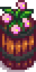
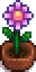
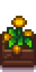
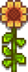
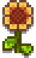
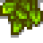
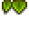

Se déroule le 24 de Printemps
Le deuxième festival prend place chaque année dans la forêt Sève-Cendreuse entre 9h et 14h. Cette zone se trouve à l’extrême ouest de la forêt juste en dessous de la tour du sorcier. La zone n’est accessible uniquement pendant cet évènement. Pour lancer l’évènement le joueur devra parler à Lewis et à la fin de danse le joueur sera ramené dans sa ferme à 22h.
Lors de cette journée, le joueur pourra demander de danser avec un des PNJ célibataires à condition que celui-ci possède au moins 4 cœurs d’amitiés avec le joueur. Danser avec un PNJ vous augmentera son amitié d’un cœur. Si vous êtes divorcé votre ex refusera votre invitation à la danse.
En multijoueur, les joueurs peuvent également danser les uns avec les autres.
Boutique d'objet
| Image | Nom | Description | Prix |
|---|---|---|---|
|  | Décor saisonnier | Cette décoration change au fil des saisons. |  350 po 350 po |
|  | Plante saisonnière | Une plante décorative qui change au fil des saisons. Elle n’a pas besoin d’être arrosée. | 350 po |
|  | Plante saisonnière | Une plante décorative qui change au fil des saisons. Elle n’a pas besoin d’être arrosée.. | 350 po |
 |
Bac à fleurs | Fleurs plantées dans un tonneau en chêne. Floraison au printemps et en été. | 200 po |
| Recette du bac à fleurs | Une recette pour faire un bac à fleurs | 1 000 po |
|
 |
Jonquille (10) | Une fleur de printemps traditionnelle qui fait un joli cadeau. | 50 po |
 |
Pissenlit (10) | Pas la plus jolie des fleurs. Ses feuilles en revanche, sont très bonnes en salade. | 50 po |
| Epouventail | Collectez-les tous ! (5 sur 8) | 2 500 po |
|
|  | Jardinière murale | Peut se mettre à l’intérieur de votre maison. | 800 po |
|  | Petite jardinière murale | Peut se mettre à l’intérieur de votre maison. | 800 po |
|  | Décoration murale en forme de feuille | Peut se mettre à l’intérieur de votre maison. | 400 po |
|  | Décoration murale en forme de feuille | Peut se mettre à l’intérieur de votre maison. | 400 po |
Note personelle
Classement 8/9
Pour cet évènement, on ressent cruellement un manque de gameplay. Le joueur ne fait que choisir un PNJ pour danser puis plus rien. On aurait pu espérer des QTE pour apporter du gameplay.